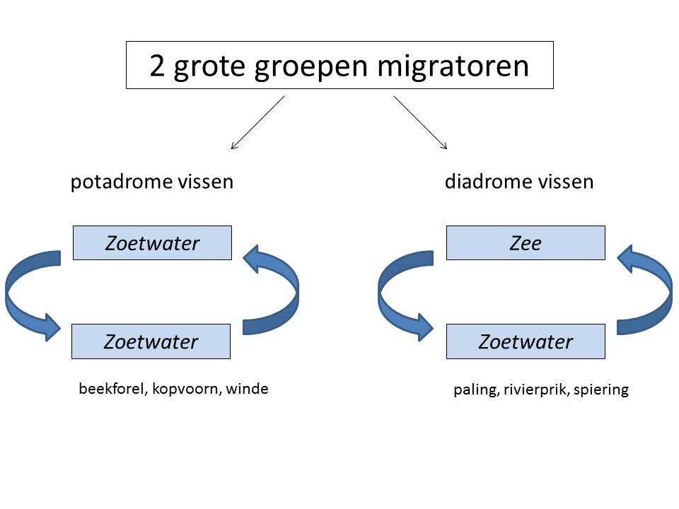
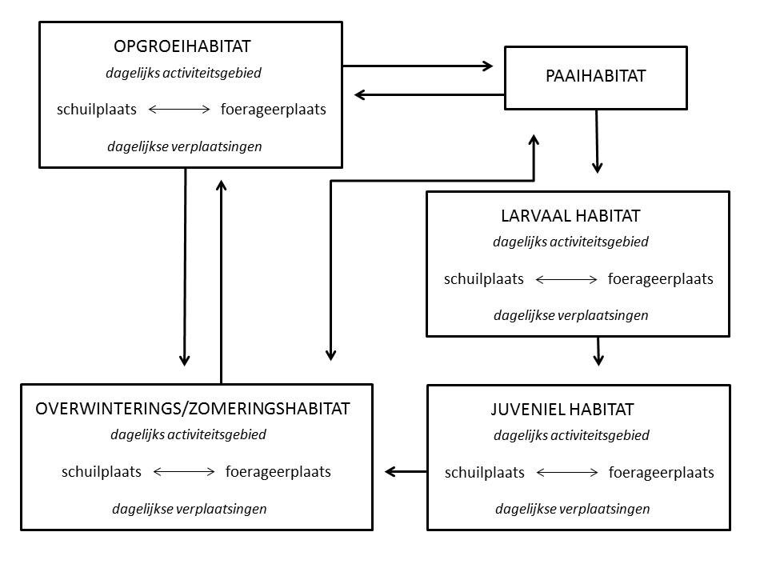
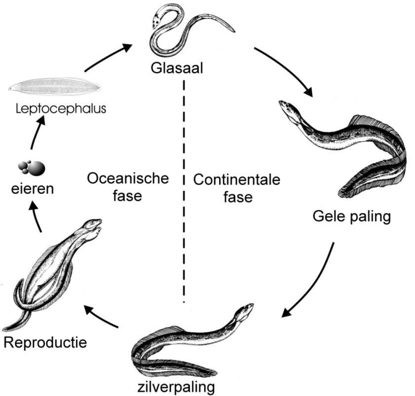
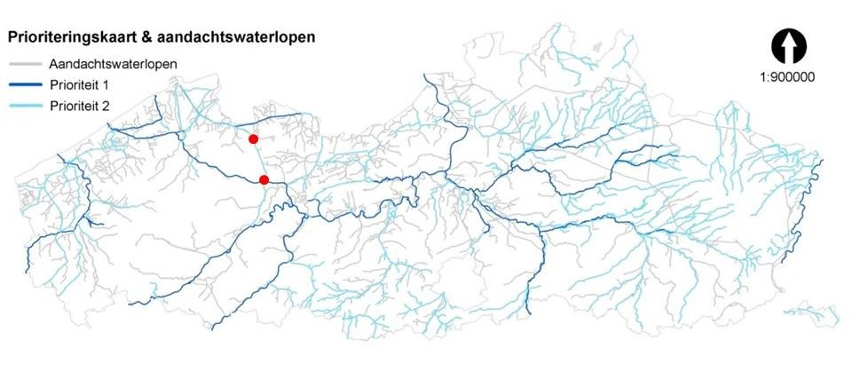

2 Inleiding
Longitudinale connectiviteit van waterwegen is cruciaal voor het voortbestaan van vispopulaties (Fullerton et al., 2010). Het laat vissen toe om zich te verplaatsen binnen rivier- en kanaalnetwerken, waardoor ze toegang krijgen tot essentiële habitats voor voedsel-, paai- en kraamkamers (Greenberg & Calles, 2010). Deze beweging is essentieel voor het behoud van gezonde vispopulaties en het bevorderen van de genetische diversiteit (Radinger et al., 2018). Vooral voor diadrome soorten zoals paling, bot en driedoornige stekelbaars (trachurus-populatie) is longitudinale connectiviteit cruciaal aangezien zowel mariene als brak-en/of zoetwaterhabitats nodig zijn voor foerageren en/of paaien (Radinger et al., 2018), maar ook potamodrome soorten (migreren tussen zoetwaterhabitats), zoals brasem, blankvoorn en winde, hebben een verscheidenheid aan habitats nodig.
In Vlaanderen zijn vismigratieknelpunten die de longitudinale connectiviteit van waterwegen verhinderen, alomtegenwoordig. De prioriteitenkaart vismigratie voor Vlaanderen kent verschillende prioriteitsklassen toe aan waterwegen die aangeven hoe belangrijk het herstel van de longitudinale connectiviteit is door het mitigeren van vismigratieknelpunten (Stevens & Coeck, 2009). Deze prioriteitsklassen weerspiegelen het belang van een waterweg m.b.t. de doelstellingen van het palingbeheerplan en de verspreiding van habitatrichtlijnsoorten (Stevens & Coeck, 2009).
Het Afleidingskanaal van de Leie (AKL) wordt beschouwd als een prioriteit 2 waterweg wat betekent dat de knelpunten voor migratie er moeten weggewerkt zijn tegen 2027. Het aangepast spuibeheer ter hoogte van Zeebrugge laat een beperkte stroomopwaartse toegang toe tot het pand Zeebrugge-Balgerhoeke, maar de migratieproblematiek t.h.v. de panden Balgerhoeke-Schipdonk en Schipdonk-Deinze, begrensd door de stuwsluiscomplexen te Balgerhoeke en Schipdonk, werd nog niet gekwantificeerd. Dit rapport heeft als doel te achterhalen in welke mate de stuwsluiscomplexen te Balgerhoeke en Schipdonk vismigratieknelpunten zijn voor het AKL en hoe mitigerende acties vispopulaties ten goede zouden kunnen komen.
2.1 Vismigratie
2.1.1 Begrippen
Vismigratie of vistrek zijn verplaatsingen van vissen die een groot deel van de populatie of van een leeftijdsklasse betreffen. De verplaatsingen vinden plaats met een voorspelbare periodiciteit gedurende de levenscyclus van een soort. Hierbij worden twee of meer ruimtelijk gescheiden habitats gebruikt. De verplaatsingen van de vis zijn functioneel voor de overleving van deze soort. Hierdoor worden kleinschalige verplaatsingen van de vis buiten het begrip vismigratie geplaatst (Raat, 1994). Deze laatste verplaatsingen gebeuren vaak binnen het territorium of de home range van de vis (Peter, 1998).
Migratie stroomopwaarts of stroomafwaarts rivieren houdt dus een cyclische alternatie tussen twee of meer habitats in. Jonge vissen komen tevoorschijn uit het paaihabitat gebruikt door hun ouders en verplaatsen zich hetzij passief hetzij actief naar hun eerste voedselhabitat. Gewoonlijk moeten juvenielen zich dan verplaatsen van hun eerste voedselhabitat naar een overlevingshabitat of schuilhabitat wanneer er zich ongunstige toestanden voordoen (Northcote, 1998). Deze ongunstige omstandigheden kunnen bepaalde negatieve abiotische condities, de aanwezigheid van predatoren of pathogenen zijn (Wootton, 1992).
Volgens hun migratiegedrag kunnen vissen in rivieren onderverdeeld worden in twee grote groepen (Fig. 2.1): potamodrome soorten en diadrome soorten. De eerste groep voert (jaarlijks) kleine of grote migraties uit binnen een riviersysteem, terwijl soorten uit de tweede groep migreren tussen het mariene milieu en het zoetwater.

Figuur 2.1: Schematische voorstelling van de onderverdeling van vissoorten volgens hun migratiegedrag
2.1.2 Migratie van zoetwatervissen: potamodrome migratie
Zoals bij de meeste dieren is migratiegedrag van vissen in rivieren - en eigenlijk in elk watertype - het resultaat van een scheiding in tijd en ruimte van optimale biotopen (habitats) die gebruikt worden om te groeien, om te overleven (bescherming te vinden) en om zich voort te planten, en dit tijdens verschillende stadia in de levenscyclus van de soort (Northcote, 1998). Stroomop- en stroomafwaartse migraties in waterlopen worden daarom over het algemeen gekenmerkt door cyclische verplaatsingen tussen minstens twee, maar vaak drie of meer verschillende habitats (Coeck, 2001).
Potamodrome soorten die tussen 2010 en 2018 bij visstandbemonsteringen door het INBO werden aangetroffen in het Afleidingskanaal van de Leie zijn o.a. blankvoorn, giebel, winde, baars, brasem, kolblei, riviergrondel, tiendoornige stekelbaars, rietvoorn, karper, snoekbaars, bittervoorn (INBO, s.d.).

Figuur 2.2: Functionele eenheden in de levensyclus van vissen, met aanduiding van de bezochte leefgebieden en dagelijkse en seizoensgebonden verplaatsingen er tussen (uit: Coeck et al. 2000; aangepast naar Northcote 1978)
2.1.3 Vismigratie tussen zee en zoetwater: diadrome migratie
Bij diadrome migratie worden twee types onderscheiden. Vissen die opgroeien in zoetwater en paaien in zee worden katadrome vissen genoemd, vissen die opgroeien in zee maar paaien in zoetwater worden tot de anadrome vissen gerekend. Voorbeelden van anadrome vissen zijn de zalm en, minder goed gekend, ook de driedoornige stekelbaars (trachurus-vorm) terwijl de paling een typisch katadrome vis is.
Diadrome vissen zijn goede indicatoren voor landinwaartse migratie en kunnen tevens belangrijke informatie verstrekken omtrent de passeerbaarheid van migratieknelpunten (Buysse, 2003).
Diadrome soorten die tussen 2010 en 2018 bij visstandbemonsteringen door het INBO werden aangetroffen in het Afleidingskanaal van de Leie zijn o.a. paling, rivierprik, spiering, bot, dunlipharder en driedoornige stekelbaars (trachurus-vorm) (INBO, s.d.).
2.1.3.1 De ernstig bedreigde paling
De Europese paling is een katadrome vissoort: hij groeit op in zoet water en trekt als volwassen vis naar de zee om zich voort te planten. Hij maakt een complexe levenscyclus door. De voortplantingsplaats situeert zich in de Sargasso Zee, een gebied in de Atlantische Oceaan nabij Bermuda. In de Sargasso Zee ontluiken de eieren en de larven (leptocephalus larven) migreren naar het Europese continent, waarbij ze gebruik maken van de Golfstroom. Voor de Europese kusten ontwikkelen ze zich tot glasaal, een langwerpige doorschijnende vorm van ongeveer 7 cm. De glasalen pigmenteren, worden elvers, en de meeste zwemmen onze rivieren en kanalen op, op zoek naar een vaste stek waar ze een groeiperiode doormaken. Dit stadium van paling wordt gele paling genoemd. Een deel van de populatie blijft voor de kusten of groeit op in het estuarium. Er zijn duidelijke geslachtsverschillen wat grootte betreft: mannelijke palingen hebben een tragere groei en blijven duidelijk kleiner (lengte bij metamorfose: 32-46 cm) dan hun vrouwelijke soortgenoten (lengte bij metamorfose: 45- 86 cm). Na gemiddeld zes (voor de mannelijke palingen) tot negen jaar (vrouwelijke) vertoont deze gele paling opnieuw een gedaanteverwisseling, ze worden zilverpaling genoemd (Vollestad, 1992). In onze regio is dat respectievelijk 7 en 10 jaar. Metamorfoserende palingen krijgen een zilverachtige kleur, hun ogen worden groter, de vinnen veranderen van vorm en de geslachtsorganen beginnen te ontwikkelen. Op dit ogenblik, meestal in het najaar, trekken deze zilverpalingen onze rivieren en kanalen af en beginnen ze hun paaimigratie met de Sargasso Zee als eindbestemming.

Figuur 2.3: De levenscyclus en de belangrijkste ontwikkelingsstadia van paling (Belpaire 2008).
Reeds tientallen jaren wordt een sterke daling van de palingpopulaties waargenomen in Europa (Bonhommeau et al., 2008) en de Europese paling (Anguilla anguilla L.) wordt nu zelfs beschouwd als zijnde ernstig bedreigd. Oorzaken voor deze trend zijn de chemische waterkwaliteit, fysische habitatcondities, migratiebarrières, verhoogde predatie, visserij en klimaatsverandering (Bonhommeau et al., 2008). Om de Europese paling voor uitsterven te behoeden, heeft de Europese Unie in 2007 de Palingverordening (EC No. 1100/2007) uitgevaardigd, die het behoud en het herstel van de soort beoogt. Verder vraagt de verordening een beheersaanpak die de uittrek van 40% van de zilverpalingbiomassa ten opzichte van een door de mens onverstoorde toestand garandeert.
Dankzij de talrijke laaglandrivieren, kanalen, vijvers en kreken wordt Vlaanderen beschouwd als een belangrijke regio voor opgroei van paling en de rekrutering van zilverpaling. De laatste jaren verbeterde de chemische waterkwaliteit van de Vlaamse rivieren significant door intensieve afvalwaterzuivering en de implementatie van bemestingsnormen. Bovendien is de paling een relatief tolerante soort, waardoor de meeste van de Vlaamse waterlichamen een geschikt habitat vormen en de paling wijdverspreid in Vlaanderen voorkomt. De rivierbeheerders focussen daarom op de mitigatie van migratiebarrières om de palingpopulaties te doen heropleven.
Verschillende auteurs bevestigen dat de stroomopwaartse migratie van juveniele paling (glasalen en elvers), hierna glasaal genoemd, één van de cruciale knelpunten is in het behoud van palingpopulaties (Bult & Dekker, 2007). Deze bereiken vaak hun Europese zoetwaterhabitats niet door migratiebarrières als dammen, stuwen en sluizen. Deze gereduceerde glasaalmigratie kan leiden tot een daling van zilverpalinguittrek en dus resulteren in een vicieuze cirkel die de palingpopulatie verder doet afnemen.
De meeste Europese estuaria hadden vroeger een hoge connectiviteit met een graduele overgang tussen zout en zoet water. Dit liet de glasaal toe om stroomopwaarts te migreren naar zoetwaterhabitats geschikt voor hun groei en ontwikkeling. De meeste rivier- en kanaalmondingen worden nu echter afgesloten ter bescherming tegen overstromingen, vooral in de lager gelegen regio’s van Europa zoals Vlaanderen en Nederland. Deze aanpak leidde tot scherpe zoet/zout overgangen en het verdwijnen van een brakke getijdenzone. Hoewel dergelijke abrupte overgangen geen osmoregulatorische problemen stellen voor glasaal (Wilson et al., 2007) en dat sommige glasalen er mogelijks toch in slagen om stroomopwaarts te migreren, kan hun migratie beperkt, en op zijn minst vertraagd, worden. De energieverliezen die hiermee gepaard gaan kunnen gedragsveranderingen inleiden die de verdere stroomopwaartse migratie beperken of zelfs stopzetten (Du Colombier et al., 2007). De Vlaamse waterbeheerders proberen momenteel palingpopulaties te stimuleren door bepoting met glasaal, maar onderzoek toonde aan dat deze aanpak de verspreiding van schadelijke parasieten kan verhogen (Audenaert et al., 2003). Bijgevolg zijn geïntegreerde beheeropties vereist die de stroomopwaartse migratie van lokale glasalen bevorderen.
Indien sanering van de sluisstuwcomplexen in Balgerhoeke en Schipdonk nodig blijkt dan zou een heel groot opgroeigebied beschikbaar gesteld worden en vrije vismigratie gerealiseerd worden tussen het AKL en het Westervak van de Ringvaart, het Kanaal Gent-Oostende, de Coupure, de Leie en de Bovenschelde. De draagkracht van al deze rivieren en kanalen voor paling is vermoedelijk nog sterk onderbenut. Tijdens onderzoek op het nabijgelegen Leopoldkanaal in de periode 2014-2017 werden palingabundanties geschat variërend tussen 5,6 tot 54,1 kg ha-1 (Van Wichelen, 2018) en op een aantal meer stroomopwaarts gelegen locaties in het Leopoldkanaal werden in 2012 met dezelfde methodiek gelijkaardige waarden (6,7-41,3 kg ha-1) bekomen (Vandamme, 2020). Historische densiteiten van gele paling in polderwaterlopen (periode 1925-1936) daarentegen zijn beduidend hoger (bv. Ijzer 168 kg/ha, Kanaal Nieuwpoort-Duinkerke 272 kg/ha, Veurne-Ambacht 470 kg/ha, Venepevaart 90 kg/ha) (Vrielynck, 2003).
2.1.3.2 De driedoornige stekelbaars
Op basis van het aantal en de schikking van de laterale beenplaten kunnen drie types driedoornige stekelbaars onderscheiden worden. Deze drie types worden trachurus, semi-armatus en leiurus genoemd (Wootton, 1992). Soms wordt nog een vierde type onderscheiden: het hologymnurustype dat geen beenplaten bezit. De anadrome trekvorm van de driedoornige stekelbaars trekt in het vroege voorjaar (eind januari – mei) van de zee naar brak en zoetwater en heeft dan een saliniteitsvoorkeur voor zoetwater. Aan het einde van het voortplantingsseizoen (vanaf omstreeks juli) trekken de dieren naar zee en vertonen dan een zoutwatervoorkeur die gedurende de hele winter blijft bestaan tot de aanvang van de voorjaarstrek (Verreycken, 2012). Het leiurustype is een residente zoetwatervorm die in Noordwest-Europa slechts een klein deel uitmaakt van de migrerende stekelbaarspopulaties. Van het semiarmatustype zijn zowel residente als migrerende populaties gekend (Wootton, 1976). Vangsten van stekelbaarzen in de Schelde ter hoogte van Antwerpen in maart 1998 hadden de volgende samenstelling: 65 % trachurus, 31 % semi-armatus en 4 % leiurus (Vlietinck, 1998). Uit migratie-onderzoek van het INBO in opdracht van DVW aan de sluisstuwcomplexen op de Ringvaart in Evergem en Merelbeke blijkt dat driedoornige stekelbaars vanaf december en vooral in januari en februari stroomopwaarts trekken en zich kunnen concentreren onder migratieknelpunten (Buysse, 2003).
Samen met de potamodrome soorten en paling kan ook de driedoornige stekelbaars (forma trachurus), gebaat zijn met een migratiefaciliteit in Balgerhoeke en Schipdonk. Het is onduidelijk of deze trekvorm van de driedoornige stekelbaars voldoende mee kan profiteren van het aangepast spuibeheer in Zeebrugge om het zoetwater te bereiken.
2.1.3.3 Rivierprik, spiering, bot en dunlipharder
Het is, in tegenstelling tot paling en driedoornige stekelbaars, vooralsnog onduidelijk of het AKL een functie kan hebben als alternatieve migratieroute om bepaalde zoetwaterhabitats (zoals de waterlopen uit het bekken van de Gentse kanalen en het Leie- en Bovenscheldebekken) te bereiken voor andere diadrome soorten zoals rivierprik, spiering, bot en dunlipharder.
2.1.4 Diadroom versus potamodroom
Diadrome migraties zijn vaak heel opvallend, maar daarom kan nog geen afbreuk gedaan worden aan het belang van migratieprocessen voor obligate zoetwatervissen (Northcote, 1998). In het belang van ecosysteembiodiversiteit wordt, naast de commercieel en recreatief interessante soorten, nu ook voor de volledige visgemeenschap vismigratie als een belangrijk gedragskenmerk beschouwd (Northcote, 1998). De doorgaans langere migratieafstanden maken diadrome migraties niet belangrijker in functionele termen dan de minder opvallende potamodrome migraties. Gesynchroniseerde seizoenale migraties van een paar honderd meter in rivieren kunnen even belangrijk zijn voor een levenslange goede conditie als lange-afstandsmigraties van of naar de zee. Deze korte migraties kunnen als bewegingen tussen habitats beschouwd worden, die nuttig of noodzakelijk zijn voor het vervolledigen van de levenscyclus, ongeacht welke afstand werd afgelegd (Lucas & Baras, 2001).
Dit toont aan dat vrije migratie tussen verschillende habitats en ongeacht de omvang van de bewegingen, van enkele honderden meters tot honderden kilometers, noodzakelijk is voor alle zoetwatervissoorten.
2.1.5 Migratieperiode
Verschillende soorten die in diverse delen van een stroomgebied leven, migreren op verschillende momenten in het jaar, waarbij ook de duur en omvang van deze migraties variëren (Lucas & Baras, 2001). Niet enkel paaimigratie maar ook de migratie naar foerageergebieden en overwinteringsgebieden van juveniele en subadulte vissen kan heel omvangrijk zijn (Buysse, 2003).
2.1.5.1 Voortplantingsmigratie van karperachtigen
De voortplantingsperiode van de meeste karperachtigen is gesitueerd tussen april en mei. De voortplanting geschiedt wanneer de watertemperatuur daartoe gunstig is (bv. blankvoorn 12-15 °C) (Verreycken, 2012). Andere vissoorten zoals driedoornige stekelbaars en snoek ondernemen al veel vroeger voortplantingsmigraties (Buysse & Coeck, 2014) terwijl volgens Holcik de voortplantingsmigratie van rivierprik vanuit zee naar de rivieren zowat het ganse jaar door kan plaatsgrijpen afhankelijk van rivier tot rivier (Holcik, 1986).
2.1.5.2 Migratie van glasalen, elvers en gele paling
In onze contreien vindt glasaalmigratie voornamelijk plaats van februari tot en met mei met een hoogtepunt tussen 15 maart en 15 april (Belpaire, 2008). Nadien kunnen volledig gepigmenteerde palingen (elvers) nog tot en met september verder stroomopwaarts trekken.
Glasalen die de estuaria binnendringen worden aangetrokken door zoetwaterstroming en ermee geassocieerde lokstoffen zoals geosmine (ligt aan de basis van een typische aardgeur) en uitscheidingen van adulte paling (Harrison et al., 2014). Glasalen die het eerst in de estuaria arriveren hebben doorgaans een betere conditie, die ze aanwenden om stroomopwaarts te migreren. Glasalen die later toekomen zijn kleiner, hebben een lager gewicht en zullen vermoedelijk eerder resideren in de estuaria zelf (Harrison et al., 2014). In eerste instantie maken de stroomopwaarts migrerende glasaaltjes gebruik van de getijstroom om zich doorheen de estuaria naar het zoetwater te verplaatsen. Tijdens vloed laten ze zich voornamelijk net achter het getijfront passief stroomopwaarts meevoeren met het getij. Tijdens eb daarentegen houden ze zich nabij of in de bodem schuil om te verhinderen dat ze opnieuw stroomafwaarts zouden worden afgevoerd. Tijdens de tij-kering en meer stroomopwaarts in de estuaria waar de getij-invloed vermindert, zullen glasaaltjes actiever stroomopwaarts verplaatsen en dit voornamelijk in scholen langs de kant.
2.2 Vismigratiebeheer en beleid in Vlaanderen
2.2.1 Herstel van vrije vismigratie
Herstel van vrije vismigratie moet op een gestructureerde en wetenschappelijk onderbouwde manier aangepakt worden. Op 16 juni 2009 werd een nieuwe Benelux-beschikking goedgekeurd. Hiermee verbonden de lidstaten zich er toe om binnen 12 maanden na de inwerkingtreding van de beschikking, een prioriteitenkaart op te maken. Naar aanleiding hiervan, werd door het INBO op basis van ecologische criteria een prioriteitenkaart uitgewerkt (Stevens & Coeck, 2009). Hierop zijn de belangrijkste waterlopen voor het visbestand aangeduid die dus als eerste knelpuntvrij moeten worden gemaakt.
Bij het opstellen van de prioriteitenkaart werd rekening gehouden met de aanbevelingen van het Palingbeheerplan, de verspreiding van de Habitatrichtlijnsoorten (de beek- en rivierprik, de kleine en grote modderkruiper, de rivierdonderpad, de fint, de Atlantische zalm en de bittervoorn) en de stroomminnende soorten (de serpeling, de kopvoorn en de kwabaal) waarvoor in Vlaanderen een soortherstelprogramma is uitgewerkt. Het is belangrijk om waterlopen waarin deze doelsoorten voorkomen snel vrij te maken van migratieknelpunten. Zo kunnen deze zeldzame soorten hun leefgebied uitbreiden of hun voortplantingsgebieden terug bereiken.
Waterlopen van prioriteit 1 en 2, en aandachtswaterlopen
Op de prioriteitenkaart staan waterlopen van prioriteit 1 en prioriteit 2 en aandachtswaterlopen aangeduid. De kaart omvat de waterlopen die ecologisch belangrijk zijn en/of een verbindingsfunctie hebben voor ten minste de Europees beschermde soorten. Voor het wegwerken van de knelpunten op deze waterlopen wordt de timing afgestemd op de EU-KRLW (Kaderrichtlijn Water):
90 % van de knelpunten van eerste prioriteit moeten weggewerkt zijn voor 31 december 2015 en de rest van deze knelpunten voor 31 december 2021.
50 % van de knelpunten van tweede prioriteit moeten weggewerkt zijn voor 31 december 2015 en de rest van deze knelpunten wordt opgesplitst in twee delen van telkens 25%. Het eerste deel wordt weggewerkt voor 31 december 2021 en het tweede deel voor 31 december 2027.
De aandachtswaterlopen vergroten het potentiële leefgebied van de doelsoorten. Zo zijn veel polderwaterlopen als aandachtswaterloop aangeduid omdat ze dienst doen als opgroeihabitat voor jonge palingen. Het spreekt voor zich dat er op aandachtswaterlopen geen vismigratieknelpunten mogen bijkomen Een timing voor het wegwerken van vismigratieknelpunten op deze waterlopen is er nog niet.
Het Afleidingskanaal van de Leie is op de prioriteitenkaart aangeduid als waterloop met prioriteit 2. Dit betekent dat de sluistuwcomplexen in Balgerhoeke en Schipdonk tegen 2021 of ten laatste tegen 2027 vispasseerbaar moeten gemaakt worden mocht blijken dat dit nu niet het geval is.

Figuur 2.4: Ligging van Balgerhoeke en Schipdonk op de prioriteitenkaart voor de Vlaamse waterlopen
2.2.2 Aangepast spuibeheer in het AKL in Zeebrugge i.f.v. glasaalmigratie
De getijdenbarrières in de Belgische havens en in het stroomgebied van de Schelde vormen voor glasaal, driedoornige stekelbaars en tal van andere diadrome vissoorten een veelal onoverkomelijke hindernis voor hun opwaartse migratie naar het Vlaamse binnenland. Sinds 2014 past De Vlaamse Waterweg (DVW) jaarlijks aangepast sluis- of spuibeheer toe in het voorjaar ter hoogte van de havens van Nieuwpoort, Oostende en Zeebrugge. Hierbij worden een aantal spuiopeningen tijdens opkomend getij op een kier gezet om de glasaalintrek in Vlaanderen te verbeteren (Van Wichelen, 2018). De trachuruspopulaties van driedoornige stekelbaars en andere soorten kunnen eventueel mee profiteren van deze beheersmaatregel. Toepassing van alternatief spuibeheer aan het sluizencomplex ‘Sas-Slijkens’ aan de monding van het Kanaal Gent-Oostende (KGO) in Oostende (Buysse et al., 2012) en aan de monding van het Afvoerkanaal Veurne-Ambacht in Nieuwpoort (Vandamme, 2020) toonde aan dat driedoornige stekelbaars er mondjesmaat met de glasaal mee binnen zwemt.
Eén van de belangrijke intrekroutes voor glasaal in Vlaanderen betreft het uitwateringscomplex in de haven van Zeebrugge aan de monding van het Afleidingskanaal van de Leie en van het Leopoldkanaal waar sinds 2014 aangepast sluisbeheer wordt toegepast (Van Wichelen, 2018).
Referenties
 Bruneel, S., et. al. (2025). 10.21436/inbor.132763058
Bruneel, S., et. al. (2025). 10.21436/inbor.132763058